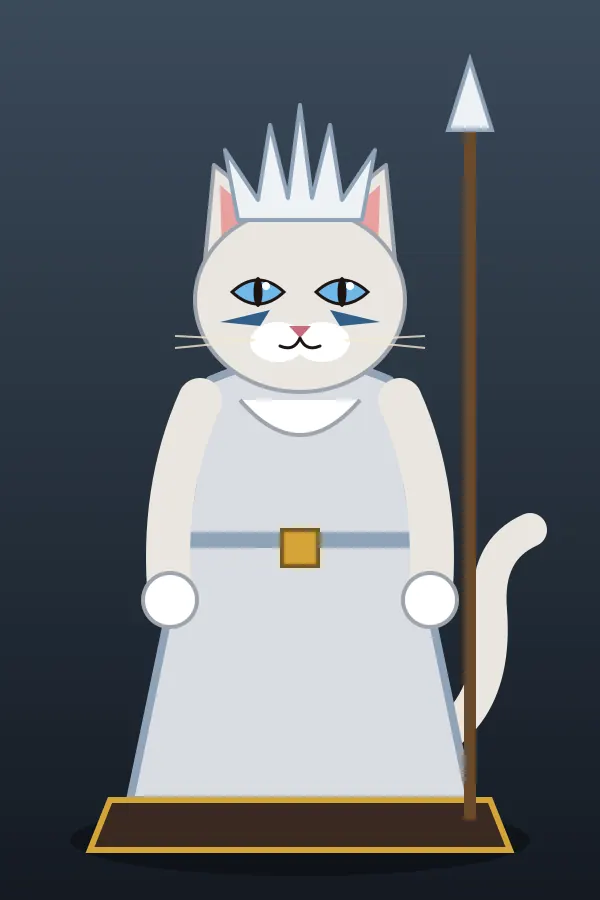
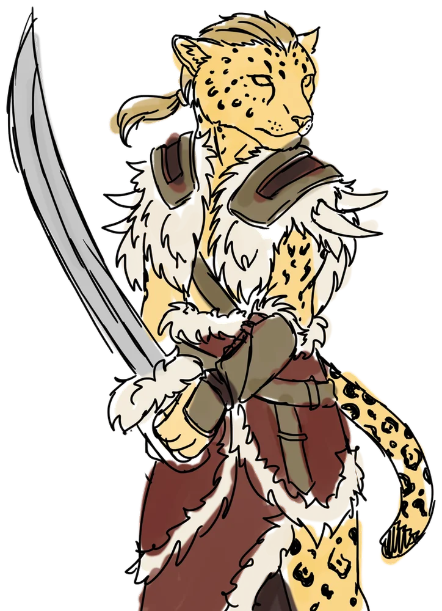
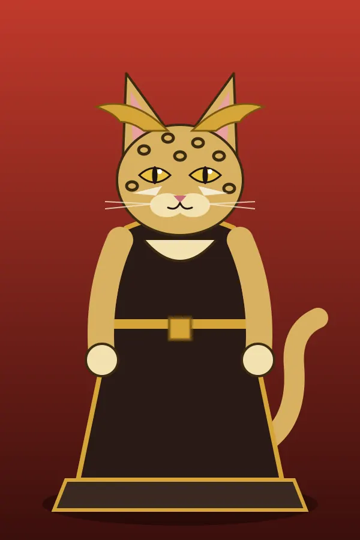
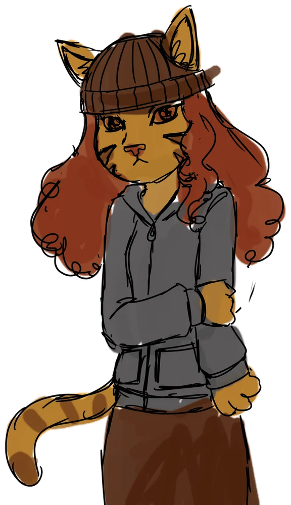
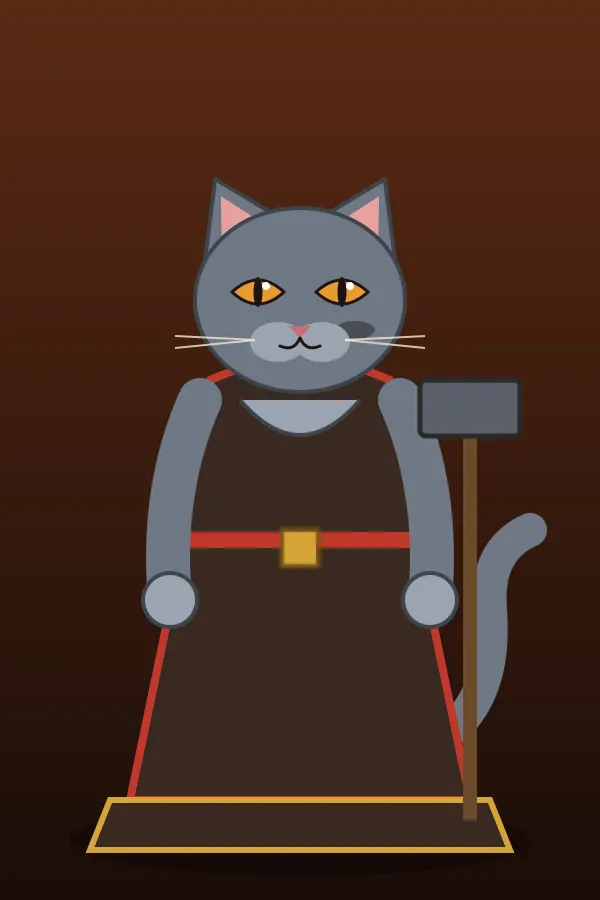
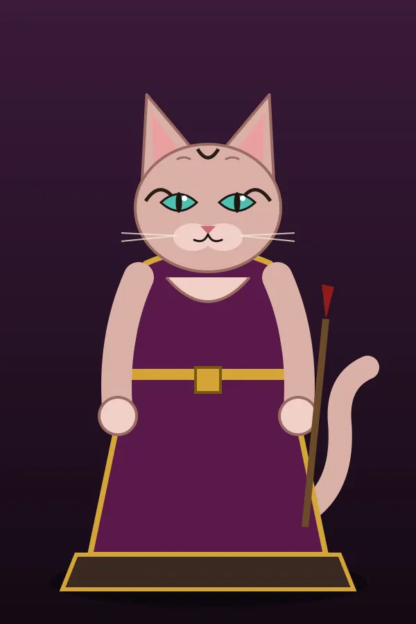

Meet the Clan
Eight Nekoro you are likely to meet, boast with, or lose to. Choose a face to read their story.
Rhazan Goldmane

- Species/Breed
- Maine Coon (Felis catus)
- Occupation
- King of the Nekoropolis, Champion of the Ring
- Temperament
- Proud, booming, secretly sentimental
- Favourite Food
- Whole roast salmon
“I won this crown with my claws. I keep it with my word.”
Rhazan Goldmane
Back to the clan
Ysha Frostfang

- Species/Breed
- Siberian (Felis catus)
- Occupation
- Queen & War-leader
- Temperament
- Fierce, sharp-witted, impatient
- Favourite Food
- Smoked trout, eaten standing up
“Plans are for the Feathered. I prefer to be ready.”
Ysha Frostfang
Back to the clan
Sekhra Sun-Eye

- Species/Breed
- Abyssinian (Felis catus)
- Occupation
- High Seer of the Sun Shrine
- Temperament
- Serene, cryptic, enjoys being right
- Favourite Food
- Warm goat's milk with honey
“The sun sees everything. I merely see it first.”
Sekhra Sun-Eye
Back to the clan
Tovra Ironclaw

- Species/Breed
- Bengal (Felis catus)
- Occupation
- Captain of the Walls
- Temperament
- Stubborn, steady, never sits down
- Favourite Food
- Dried venison strips
“Walls do not need to be clever. They need to be there.”
Tovra Ironclaw
Back to the clan
Kesh Skyrender

- Species/Breed
- Savannah cat (Felis catus × Leptailurus serval)
- Occupation
- Rider of Aurgryf, the golden winged lion
- Temperament
- Restless, daring, show-off
- Favourite Food
- Whatever she caught herself
“The Avianis think they own the sky. Aurgryf disagrees.”
Kesh Skyrender
Back to the clan
Mika Emberpaw

- Species/Breed
- Orange tabby domestic shorthair (Felis catus)
- Occupation
- Recruit, baker's daughter
- Temperament
- Eager, loud, brave beyond her size
- Favourite Food
- Fresh bread (stolen, still warm)
“I am small. So is a spark, and look what sparks do.”
Mika Emberpaw
Back to the clan
Grom Ashpelt

- Species/Breed
- Chartreux (Felis catus)
- Occupation
- Master of the Ember Forge
- Temperament
- Gruff, patient, kind to kittens
- Favourite Food
- Cream stew
“Every blade has a story. Most of them start with me shouting.”
Grom Ashpelt
Back to the clan
Vashti Inkskin

- Species/Breed
- Sphynx (Felis catus)
- Occupation
- War-painter & tattoo artist; the clans' storyteller
- Temperament
- Theatrical, gossipy, warm
- Favourite Food
- Spiced chicken hearts
“Sit still, darling. Every stripe I paint is a story you will tell for the rest of your life.”
Vashti Inkskin
Back to the clan